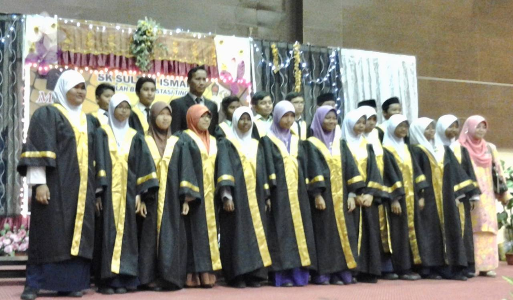
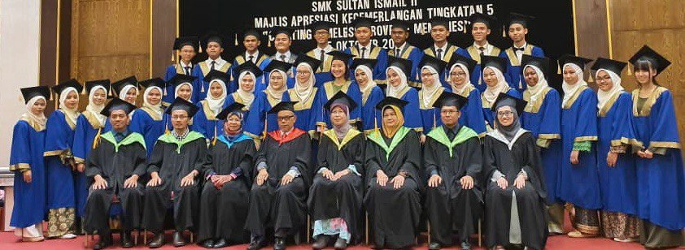
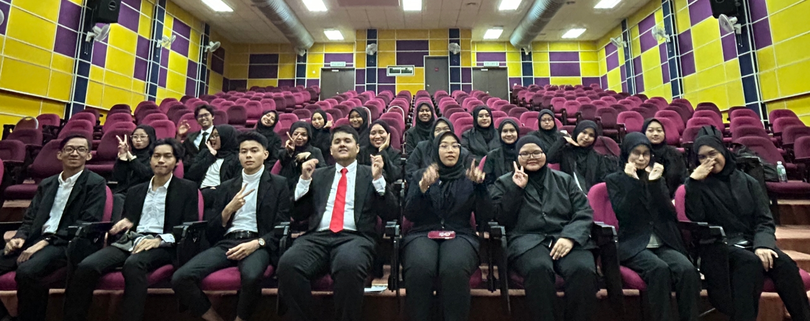

| NAME OF SCHOOL | YEAR | ABOUT |
|---|---|---|
| SEKOLAH KEBANGSAAN SULTAN ISMAIL | 2009-2014 | SSekolah Kebangsaan Sultan Ismail may be found in the city of Kemaman in the state of Terengganu. This school is consistently ranked as one of the top performing schools in the state of Terengganu. Because the faculty and staff genuinely care about the students and provide them with outstanding care, I really appreciate being here at this school. In point of fact, there is a strong emphasis placed on academics at this institution, and I did extremely well on the UPSR. |

| NAME OF SCHOOL | YEAR | ABOUT |
|---|---|---|
| SEKOLAH MENENGAH KEBANGSAAN SULTAN ISMAIL 2 | 2015-2019 | My schooling began here, and I remained a student in the accounting department all the way to the end of my senior year. During the period that I spent at this school, I was elected to and served in a number of leadership roles, including those of class secretary, highest disciplinary council, and school superintendent. My capacity for communication as well as my sense of self-confidence have both risen as a direct result of this event, which led me to understand both of these things. When I attend to events like lectures or seminars, I don't get nervous about having to speak in front of a huge number of people since I'm used to it. |

| NAME OF UNIVERSITY | YEAR | ABOUT |
|---|---|---|
| Universiti Teknologi Mara(UiTM) MACHANG | 2020-2023 | I am starting a diploma in information management and am already in the final semester. I really like to start my university life even in the people's place and there are many things that I need to master, among which I really like to learn a new dialect in the people's country. In fact, everyone knows that Kelantan is widely recognized as a paradise for food lovers. |